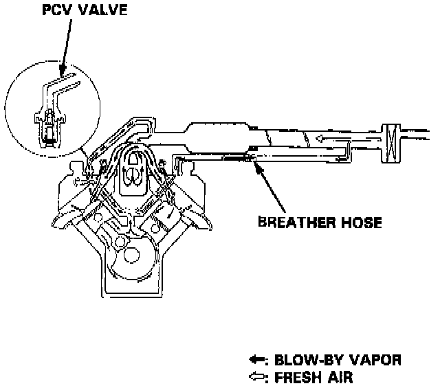

Positive Crankcase Ventilation Valve: Description and Operation

PURPOSE
The Positive Crankcase Ventilation (PCV) valve prevents crankcase "blow-by" gases from escaping into the atmosphere by maintaining a slight vacuum in the crankcase.
OPERATION
The Positive Crankcase Ventilation (PCV) Valve, located in the left valve cover, meters air flow in the system at a rate that depends on manifold vacuum. The function of the PCV valve is to restrict the flow of crankcase emissions when vacuum is high to preserve idle stability.